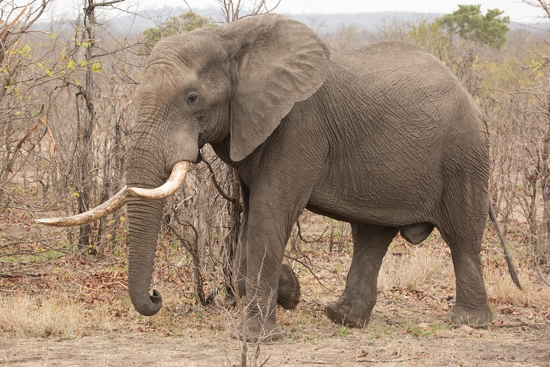

Elefantes
Encontraras:
Qué son?
La inteligencia de los elefantes
Cosas que quizás no sabias
Qué son?
Son animales mamíferos, exclusivamente herbívoros cuya característica principal, además del gran tamano, es su larga trompa y sus enormes orejas. Se organizan en manadas de unos 20 miembros, miden casi 4 metros los ejemplares más grandes y pueden llegar a pesar más de 6.000 kilos, tienen el periodo de gestación más largo de todos los animales: 22 meses. Nada más nacer, las crías ya pesan más de 100 kilos.
La inteligencia de los elefantes
Tienen también un cerebro muy grande por lo cual son animales muy inteligentes a los que se asocian comportamientos como el duelo por una pérdida, la asociación con otros miembros, el uso de herramientas, la adopción, el juego e incluso el autorreconocimiento.
Cosas que quizás no sabias
Las orejas de los elefantes actúan como termostato ayudando a soportar el fuerte calor de las zonas donde habitan y su trompa en realidad no es más que una nariz muy desarrollada que también usan como un brazo largo. Los colmillos los usan para buscar comida y agua y son uno de los motivos por los que esta especie se encuentra amenazada, ya que el hombre los utiliza por el valor del marfil.

Consula mas informacion aqui